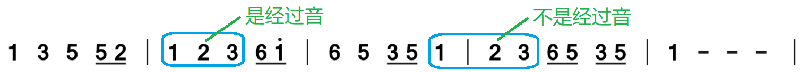

个人乐理自学笔记
本节内容参考自三分钟音乐社 《零基础学音乐·自学乐理第二季》 73节、85-99节
乐谱记号
变音记号
变音记号一共有五种，除乐理笔记01-基础知识中提到的升号♯、降号♭、重升号𝄪与重降号𝄫外，还有还原号♮，用于取消前面音符的升降变音记号，还原为原来的音。
变音记号遵循以下的规则：
- 变音记号对“同一小节”内它出现后的所有“同一个音”生效。只管同一个小节，小节外的部分不会变音。
- “同一小节”的“同一个音”出现新的变音记号时，立即以新记号为准。如前面有降号的情况下，后面出现升号，升号及以后的音均要进行升音变音（这里不存在升号与降号相抵消的情况）。
- 涉及到延音线跨小节的情况，延音线上的音是同一个音，因此以延音线上最前面的音的升降号为准。延音线后的音与延音线上最前面的音不在同一小节，不会受该升降号影响。
- 为方便看谱，很多简谱会将所有需要升降的音全部标注。
变音记号使用实例（上谱为原谱，下谱表示实际要演奏的音）：
力度记号
| 标记 | 含义 |
|---|---|
| \(pp\) | 很弱(pianssimo) |
| \(p\) | 弱(piano) |
| \(mp\) | 稍弱(mezzo piano) |
| \(mf\) | 稍强(mezzo forte) |
| \(f\) | 强(forte) |
| \(ff\) | 很强(fortissimo) |
| \(fff\) | 最强(forte fortissimo) |
| \(cresc.\) | 渐强(crescendo) |
| \(dim.\) | 渐弱(diminuendo) |
| \(sf\)、\(sfz\)、\(fz\) | 突强(sforzando) |
| \(fp\) | 强后突弱(forte piano) |
| \(sfp\) | 突强后突弱(sforzando piano) |
| \(>\) | 重音 |
\(pp\)、\(p\)、\(mp\)、\(mf\)、\(f\)、\(ff\)、\(fff\)的作用范围从标有该力度记号的音开始，到下一个力度记号出现为止。
速度记号
| 标记 | 含义 |
|---|---|
| \(rit.\)、\(rall.\) | 渐慢 |
| \(accel.\) | 渐快 |
| 𝄐 | 自由延长时值 |
反复记号
反复一次标记间的内容
前反复记号“𝄆”与后反复记号“𝄇”之间的内容要多重复一遍。
前反复记号在乐谱开头时可以省略。
跳房子
第一次进入一房子，第二次进入二房子，以此类推。
从头反复
\(D.C.\)(Da
Capo)回到乐谱开头反复，反复到\(Fine\)处结束。
\(D.C.\)(Da Capo)回到乐谱开头反复到\(Da\ Coda\)，然后跳转到\(Coda\)处继续演奏。
Coda意为“尾声”，\(Da\ Coda\)与\(Coda\)均可用符号“𝄌”代替，如下谱所示。
从S处反复
类似于上文“从头反复”，区别为遇到\(D.S.\)后回到“𝄋”处。
省略记号
震音记号
单音震音：实际演奏音符取决于震音记号有几根线，实际演奏时长为原音符时长。
如“”的震音记号有两条线，代表十六分音符，原音符为四分音符，则实际演奏四个十六分音符，即“ ”
”
再如“”的震音记号有三条线，代表三十二分音符，原音符为八分音符，则实际演奏四个三十二分音符，即“”
双音震音：实际演奏音符取决于震音记号有几根线，实际演奏时长为其中一个原音符时长。（双音震音中各个原音符时长一致）
如“”的震音记号有两条线，代表十六分音符，原音符均为四分音符，则实际演奏四个十六分音符，即“”
音型反复记号
用音型反复记号代表重复的音型，音型反复记号的斜线数与原音符下横线数一致（或与其中某个原音符下横线数一致，并不绝对）。
小节反复记号
标在小节内部时表示重复该小节；标在小节线上就是重复两个小节。
小节反复记号斜线数量与该小节第一个音符下横线数一致（并不绝对）。
演奏记号
换气记号
换气符号为“∨”，标在音符上方，防止一口气唱到底被憋死。
顿音记号
顿音记号为“▼”，标在音符上方，唱的时候要有明显停顿感。理论上演奏时长为原音符的四分之一或二分之一时长（并不绝对）。
几个连续的顿音记号上画连线时，如“”。意为“连续的顿音”，唱的时候也要断开但断开的程度较低。理论上演奏时长为原音符的四分之三时长（并不绝对）。
保持音记号
顿音记号为“—”，标在音符上方，起强调作用，要求充分保证这个音的演奏时长为该音符时长。（受客观条件所限，演奏某个音时通常达不到其音符规定时长）
滑音记号
对于涉及单个音的滑音，上滑音为“↗”，下滑音为“↘”，标在音符两侧。演奏时需要适当的在原有音调基础上平滑地变调，变调的程度自己把握。
对于涉及两个音的滑音，上滑音为“𝆱”，下滑音为“𝆲”，标在两个音符中间。要平滑地从一个音符变调到另一个音符。
刮奏记号为“”，常见与西洋乐器曲谱中，效果上与滑音相同，强调为实现滑音所做的操作为刮奏。
琶音记号
曲谱中同时演奏几个音时，几个音并列标在曲谱同一个位置上，若要使这几个音的演奏有较小的时差时就称为琶音。
琶音记号为“𝆃”，此时需要按从下到上的顺序（默认顺序）迅速弹出同一个位置上的音。
若要按从上到下顺序弹奏，则使用记号“𝆄”。
装饰音记号
理论基础
级进：忽略升降号，若两个音间没有其他唱名，则前一个音到后一个音称为“级进”。如“\(12\)”、“\(^♭1^♯2\)”可称为向上级进，“\(\dot 1 7\)”可称为向下级进。
跳进：忽略升降号，若两个音间有其他唱名，则前一个音到后一个音称为“跳进”。如“\(5 \dot 1\)”可称为向上跳进，“\(53\)”可称为向下跳进。
经过音：三个音X、Y、Z，若X级进到Y，Y又级进到Z，且两次级进的方向相同。则称中间的Y为经过音。如“\(123\)”中\(2\)为经过音。
辅助音：若X级进到Y，Y又反向级进回到到X，两次级进的方向相反，则称Y为辅助音。如“\(121\)”中\(2\)为辅助音（先由\(1\)向上级进至\(2\)，又称为上助音）。同理\(\dot 1 7 \dot 1\)中\(7\)为辅助音（下助音）。
跳进级出的助音：X跳进到Y，Y级进到Z，称Y为跳进级出的助音。如“\(634\)”中\(3\)为跳进级出的助音。
级进跳出的助音：X级进到Y，Y跳进到Z，称Y为级进跳出的助音。如“\(341\)”中\(4\)为级进跳出的助音。
环绕助音：上助音与下助音同时出现时对其的统称。如“”中\(6\)为上助音，\(4\)为下助音，同时出现时都可称为环绕助音。
辅助音、跳进级出的助音、级进跳出的助音、环绕助音统称为助音。经过音和助音都需要处在弱拍或弱节奏位，否则不能称为经过音或助音。

波音
弹奏某音较短时间后迅速弹奏该音的临近音（忽略升降号）较短时间，然后恢复弹奏原音。形成波动感，称为波音。
| 名称 | 符号与效果 |
|---|---|
| 上波音 | |
| 下波音 | |
| 复上波音 | |
| 复下波音 |
回音
由四个音或五个音组成的一种旋律型。四个音的顺回音由上助音开始，然后依次为主音、下助音，最后回到主音。四个音的逆回音由下助音开始，然后依次为主音、上助音，最后回到主音。在四个音的回音前加一个主音便是五个音的回音。
在回音符号上侧添加变音记号，表示回音上助音为升/降音，下侧（下助音）同理。
颤音
由主音与其上助音快速交替而成，交替的频率由演奏者自行把握，总时长足够即可。
在颤音符号上侧添加变音记号，表示颤音上助音为升/降音。
倚音
倚音在简谱中通常指短倚音，在某个音的前/后插入时长很短（可忽略不计）的音称为短倚音。按照插入在音前还是音后可分为前倚音和后倚音。如果插入的音包含多个音符，则可称为复倚音。
某个音的后倚音可以看做其后一个音的前倚音。